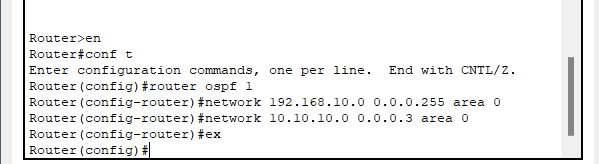

OSPF (Open Shortest Path First) adalah protokol routing berbasis link-state yang digunakan untuk menentukan jalur terbaik dalam jaringan IP. Protokol ini dikembangkan oleh IETF dan termasuk dalam kategori Interior Gateway Protocol (IGP). OSPF menggunakan algoritma Dijkstra untuk menghitung rute tercepat menuju tujuan, yang dikenal sebagai Shortest Path First (SPF).
OSPF bekerja dengan cara membangun peta topologi jaringan di setiap router, yang kemudian digunakan untuk menentukan jalur optimal bagi data. Protokol ini mendukung pengelompokan jaringan menjadi area, yang memungkinkan pengelolaan jaringan yang lebih efisien dan skalabel.
Keunggulan OSPF
Konvergensi Cepat: OSPF memiliki kemampuan untuk menyesuaikan diri dengan perubahan jaringan secara cepat, sehingga meminimalisir downtime.
Skalabilitas Tinggi: OSPF dirancang untuk mendukung jaringan berskala besar dengan ribuan perangkat.
Mendukung VLSM dan CIDR: Protokol ini mendukung Variable Length Subnet Masking (VLSM) dan Classless Inter-Domain Routing (CIDR) untuk efisiensi penggunaan alamat IP.
Autentikasi Routing: OSPF mendukung autentikasi untuk memastikan keamanan dalam pertukaran informasi routing antar router.
Pembagian Jaringan dengan Area: OSPF memungkinkan segmentasi jaringan menjadi beberapa area untuk mengurangi beban kerja router dan meningkatkan efisiensi.
Konsep Dasar OSPF
OSPF menggunakan beberapa konsep penting dalam pengoperasiannya:
Router ID: Identitas unik setiap router dalam jaringan OSPF.
Area: Jaringan OSPF dapat dibagi menjadi beberapa area untuk mempermudah manajemen dan meningkatkan efisiensi.
Link-State Advertisement (LSA): Informasi tentang status link yang dikirimkan ke semua router dalam area yang sama.
Adjacency: Hubungan langsung antara dua router OSPF yang bertukar informasi routing.
Konfigurasi OSPF di Cisco Packet Tracer

Berikut adalah langkah-langkah konfigurasi OSPF pada Cisco Packet Tracer:
Masuk ke mode konfigurasi: Router> enable
Router# configure terminal
Konfigurasi Router ID (Opsional): Router(config)# router ospf 1
Aktifkan OSPF dan tambahkan jaringan: Router(config-router)# network 192.168.1.0 0.0.0.255 area 0 Router(config-router)# network 10.10.10.0 0.0.0.3 area 0
Verifikasi konfigurasi: Router# show ip route ospf
Simpan konfigurasi: Router# write memory
Pastikan setiap router memiliki konfigurasi jaringan yang benar dan berada dalam area OSPF yang sesuai untuk memastikan konektivitas optimal.